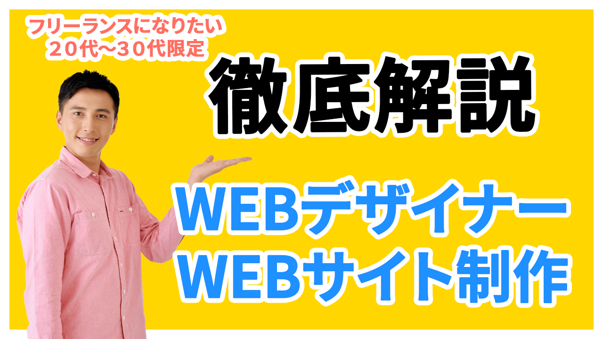

WEBデザイナー・WEBサイト制作でフリーランスになりたい方へ向けたYouTubeのサムネイル画像です。
担当
デザイン
サイトの目的
YouTube動画の再生数アップ・チャンネル認知度向上
使用技術
photoshop
デザインについて
WEBデザイナーになりたい20〜30代向けの講座紹介バナー」として、“一目で内容と対象者が伝わるインパクト重視の構成”を意識してデザインしました。背景は視認性の高いビビッドな黄色を使用し、スクロール中でも目に留まりやすく、黒＋白フチの太文字で「徹底解説」と強く訴求することで、講座の信頼感や内容の濃さをアピール。ターゲット層（20〜30代）に向けたキャッチコピー「フリーランスになりたい20代〜30代限定」は、上部にコンパクトにまとめ、柔らかく親しみやすい印象に仕上げました。さらに、講師役の人物写真を配置することで視覚的な安心感と信頼感を演出し、指差しポーズによって視線誘導を促す構図となっています。